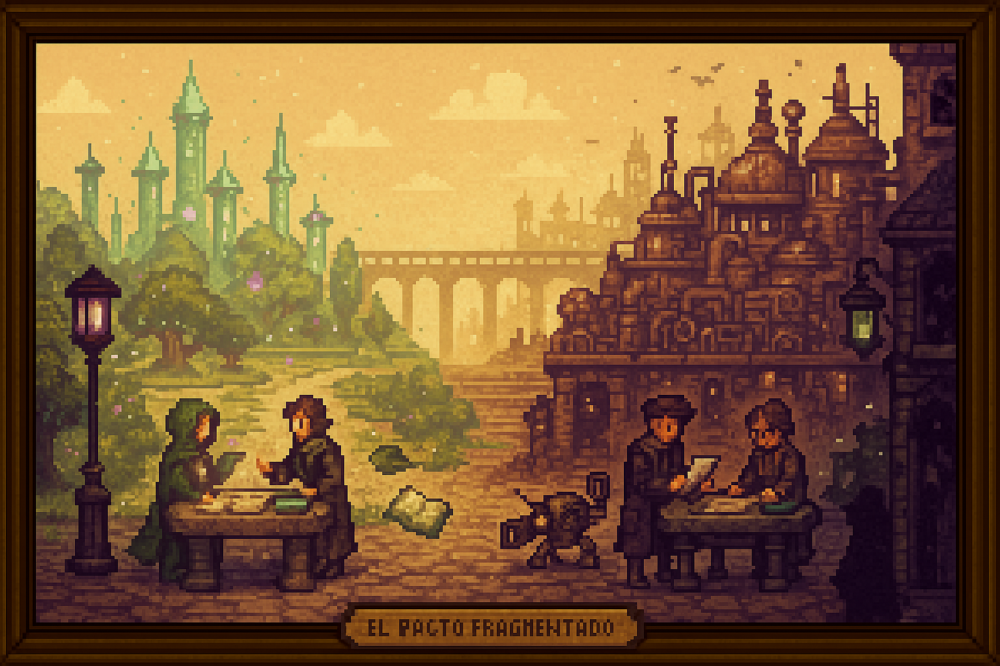

2. El Pacto Fragmentado
🌥️ El Pacto Fragmentado
Un amanecer incierto entre la magia y la tecnología.
Los primeros años tras el acuerdo fueron marcados por desconfianza y tensión entre las nuevas ciudades independientes de tradición mágica y la Coalición Tecnológica. Sin embargo, después de aproximadamente tres años de negociaciones diplomáticas y esfuerzos de acercamiento, ambas partes lograron alcanzar una estabilidad frágil, pero prometedora.
Conscientes de la necesidad de recuperar territorios devastados durante las dos Rupturas Arcanas, ambos bandos decidieron poner en marcha un ambicioso programa conjunto de I+D. Así nació el pueblo de Novaenor (“nuevo amanecer” en idioma antiguo), una población especialmente fundada como símbolo de cooperación y esperanza, donde se reunieron los mejores científicos y estudiosos de ambos mundos.
Durante años, Novaenor prosperó. El trabajo conjunto logró resultados extraordinarios, revitalizando grandes extensiones de tierra arrasada por las catástrofes arcanas y tecnológicas anteriores. La convivencia entre magos y tecnólogos generó una breve edad dorada de intercambio intelectual y cultural.
Pero la situación comenzó a deteriorarse paulatinamente. En los territorios mágicos, grupos radicales surgieron con fuerza, proclamando la necesidad de restaurar el antiguo orden arcano y rechazando la alianza con la Coalición. Sus actividades crecientes demandaron recursos y atención, debilitando el compromiso hacia Novaenor.
Por otro lado, la Coalición enfrentó graves crisis internas, marcadas por hambrunas, escasez energética y protestas en sus ciudades industriales. En respuesta, empezó a reducir drásticamente su apoyo económico y material al proyecto conjunto, priorizando la supervivencia de sus propios territorios.
A medida que el apoyo decrecía, una serie de incidentes inquietantes comenzó a suceder en Novaenor. Investigadores clave de ambos bandos desaparecieron misteriosamente en circunstancias sospechosas. Ninguna investigación pudo resolver estos casos, generando una atmósfera creciente de paranoia y desconfianza.
Cada bando acusó inmediatamente al otro de sabotaje deliberado y traición encubierta, en un intento por justificar públicamente su distanciamiento del programa. A pesar de múltiples intentos diplomáticos por aclarar las desapariciones y calmar los ánimos, la tensión diplomática se volvió insostenible. Aunque Novaenor continuó existiendo y trabajando oficialmente, las relaciones políticas nunca volvieron a recuperarse plenamente.
Así, bajo un clima de sospecha mutua, desconfianza y hostilidad contenida, se inicia la etapa histórica conocida como Pepeland 2, un periodo marcado por incertidumbres, secretos peligrosos y la frágil coexistencia entre magia y tecnología.